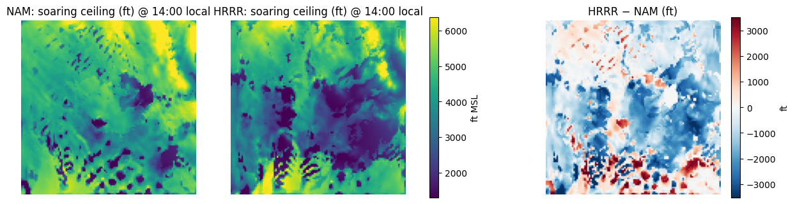
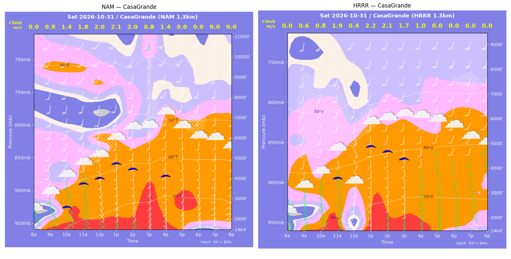
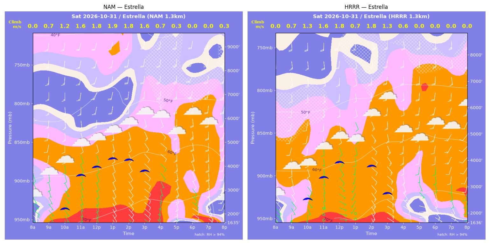
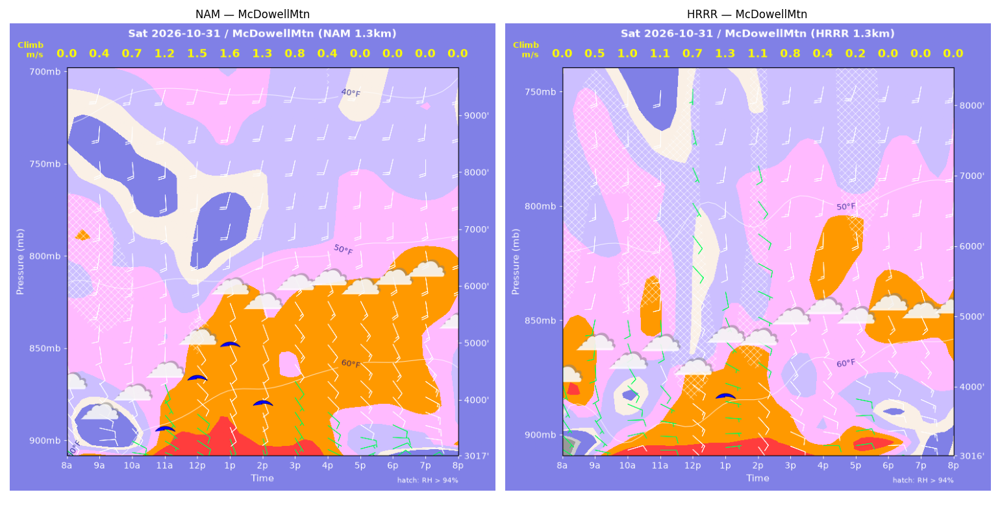
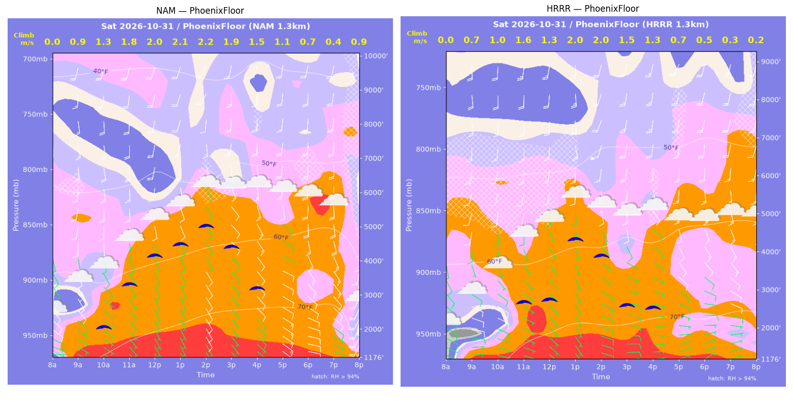
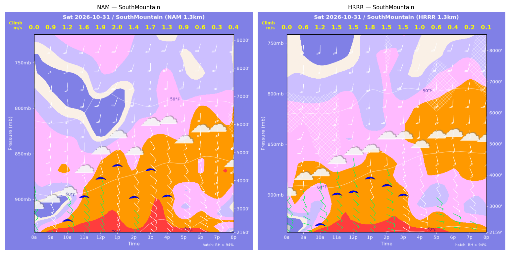
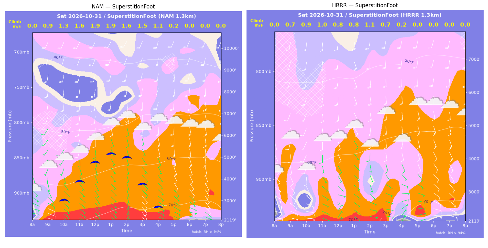
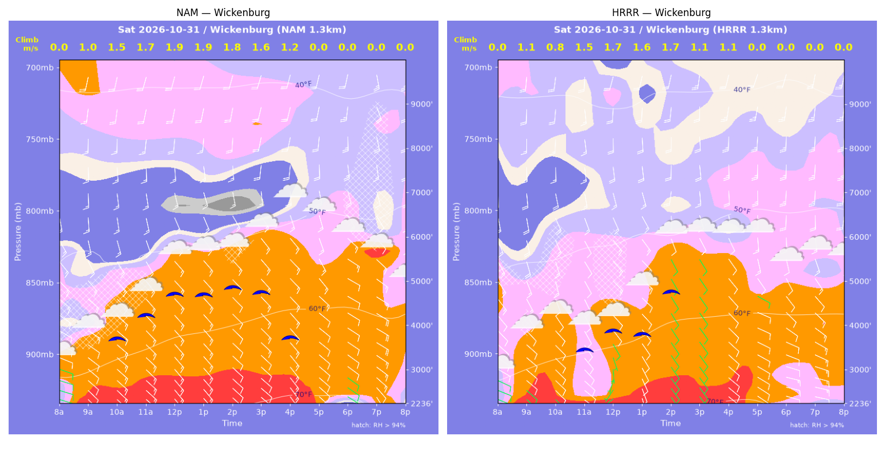

../runs/ab-phoenix-nam — model nam, cycle 2026-10-30 18z, dx 1.3333333740234374 km, 13 hours, grid 114×114../runs/ab-phoenix-hrrr — model hrrr, cycle 2026-10-30 18z, dx 1.3333333740234374 km, 13 hours, grid 114×114Grids identical; afternoon = 12:00–17:59 local (UTC-7). Δ = HRRR − NAM.
| Site | terrain ft | BL top (AGL) med|Δ| / bias (ft) | w* med|Δ| / bias (fpm) | Soaring ceiling med|Δ| / bias (ft) | BL wind speed med|Δ| / bias (kt) | BL wind dir med|Δ| / bias (deg) | 2 m temperature med|Δ| / bias (F) | Sfc LCL (AGL) med|Δ| / bias (ft) | Sensible heat flux med|Δ| / bias (W/m2) |
|---|---|---|---|---|---|---|---|---|---|
| PhoenixFloor | 1177 | 1006 / -1085 | 67 / -73 | 905 / -867 | 3 / -2 | 8 / +1 | 2 / -2 | 1012 / -819 | 30 / -46 |
| SouthMountain | 2160 | 634 / -755 | 59 / -45 | 644 / -568 | 3 / -2 | 10 / +6 | 1 / -1 | 542 / -497 | 51 / -25 |
| SuperstitionFoot | 2120 | 2840 / -2436 | 168 / -151 | 2154 / -1804 | 8 / -5 | 27 / -39 | 3 / -4 | 1286 / -1452 | 71 / -67 |
| Estrella | 1636 | 1085 / -1288 | 33 / -59 | 282 / -720 | 1 / -2 | 16 / -14 | 0 / -1 | 438 / -410 | 14 / -20 |
| Wickenburg | 2236 | 994 / -815 | 34 / -40 | 854 / -960 | 3 / -3 | 12 / -3 | 1 / -1 | 633 / -545 | 13 / -21 |
| CasaGrande | 1464 | 824 / -1420 | 51 / -24 | 1382 / -325 | 3 / -3 | 11 / +10 | 1 / -1 | 509 / -701 | 39 / -6 |
| McDowellMtn | 3017 | 533 / -816 | 33 / -34 | 486 / -588 | 3 / -3 | 34 / -30 | 2 / -2 | 978 / -986 | 12 / -12 |
| Metric | n | median |Δ| | p90 |Δ| | bias |
|---|---|---|---|---|
| BL top (AGL) (ft) | 42 | 994 | 3191 | -1231 |
| w* (fpm) | 42 | 49 | 182 | -61 |
| Soaring ceiling (ft) | 42 | 745 | 2665 | -833 |
| BL wind speed (kt) | 42 | 3 | 8 | -3 |
| BL wind dir (deg) | 42 | 13 | 40 | -10 |
| 2 m temperature (F) | 42 | 2 | 3 | -2 |
| Sfc LCL (AGL) (ft) | 42 | 802 | 1360 | -773 |
| Sensible heat flux (W/m2) | 42 | 22 | 119 | -28 |
diffmap_tol.png| local | BL top NAM/HRRR ft | w* NAM/HRRR fpm | ceiling NAM/HRRR ft | BL wind NAM/HRRR | T2 NAM/HRRR F | HFX NAM/HRRR |
|---|---|---|---|---|---|---|
| 08:00 | 0 / 0 | 0 / 0 | 1177 / 1176 | 3kt@088 / 3kt@109 | 67 / 65 | 0 / 0 |
| 09:00 | 1388 / 738 | 179 / 145 | 1177 / 1176 | 10kt@140 / 11kt@102 | 70 / 68 | 64 / 64 |
| 10:00 | 2269 / 1042 | 262 / 190 | 2113 / 1176 | 9kt@150 / 11kt@118 | 72 / 70 | 123 / 102 |
| 11:00 | 3691 / 2927 | 350 / 308 | 3351 / 2721 | 11kt@177 / 7kt@163 | 75 / 74 | 181 / 156 |
| 12:00 | 4652 / 4147 | 403 / 254 | 4166 / 2763 | 17kt@189 / 11kt@186 | 76 / 75 | 220 / 61 |
| 13:00 | 5007 / 4877 | 422 / 400 | 4471 / 4300 | 11kt@170 / 15kt@181 | 77 / 77 | 236 / 206 |
| 14:00 | 5713 / 4205 | 434 / 395 | 4984 / 3852 | 10kt@163 / 14kt@181 | 79 / 77 | 226 / 230 |
| 15:00 | 5185 / 2810 | 375 / 291 | 4378 / 2561 | 14kt@159 / 7kt@155 | 79 / 77 | 160 / 137 |
| 16:00 | 3895 / 3624 | 298 / 248 | 3160 / 2482 | 15kt@150 / 12kt@144 | 79 / 77 | 107 / 66 |
| 17:00 | 2844 / 1121 | 221 / 130 | 1177 / 1176 | 8kt@120 / 7kt@107 | 79 / 76 | 60 / 30 |
| 18:00 | 1568 / 1027 | 133 / 98 | 1177 / 1176 | 11kt@129 / 7kt@094 | 78 / 76 | 24 / 15 |
| 19:00 | 885 / 661 | 83 / 61 | 1177 / 1176 | 8kt@123 / 6kt@081 | 78 / 76 | 10 / 5 |
| 20:00 | 876 / 350 | 182 / 37 | 1177 / 1176 | 19kt@215 / 4kt@107 | 71 / 76 | 107 / 2 |
| local | BL top NAM/HRRR ft | w* NAM/HRRR fpm | ceiling NAM/HRRR ft | BL wind NAM/HRRR | T2 NAM/HRRR F | HFX NAM/HRRR |
|---|---|---|---|---|---|---|
| 08:00 | 0 / 0 | 0 / 0 | 2160 / 2160 | 6kt@141 / 7kt@129 | 66 / 63 | 0 / 0 |
| 09:00 | 844 / 451 | 169 / 117 | 2160 / 2160 | 11kt@146 / 9kt@114 | 65 / 67 | 88 / 54 |
| 10:00 | 1473 / 1417 | 245 / 229 | 2668 / 2475 | 9kt@154 / 8kt@153 | 67 / 68 | 154 / 130 |
| 11:00 | 2475 / 2517 | 319 / 300 | 3511 / 3447 | 12kt@175 / 10kt@178 | 69 / 69 | 202 / 165 |
| 12:00 | 3231 / 2727 | 369 / 290 | 4133 / 3498 | 14kt@169 / 10kt@184 | 71 / 70 | 240 / 138 |
| 13:00 | 3747 / 2983 | 401 / 347 | 4562 / 3909 | 14kt@175 / 13kt@181 | 72 / 71 | 267 / 218 |
| 14:00 | 2762 / 3025 | 278 / 291 | 3434 / 3656 | 15kt@157 / 13kt@196 | 71 / 72 | 120 / 127 |
| 15:00 | 4014 / 2281 | 325 / 302 | 4392 / 3338 | 15kt@173 / 18kt@167 | 74 / 73 | 133 / 188 |
| 16:00 | 3079 / 1439 | 263 / 199 | 3450 / 2160 | 16kt@163 / 11kt@144 | 74 / 72 | 92 / 85 |
| 17:00 | 1229 / 1077 | 180 / 113 | 2160 / 2160 | 12kt@124 / 7kt@127 | 72 / 72 | 73 / 21 |
| 18:00 | 1151 / 679 | 118 / 70 | 2160 / 2160 | 15kt@125 / 8kt@106 | 73 / 72 | 22 / 8 |
| 19:00 | 457 / 483 | 68 / 40 | 2160 / 2160 | 13kt@126 / 9kt@118 | 73 / 72 | 11 / 2 |
| 20:00 | 251 / 265 | 69 / 29 | 2160 / 2160 | 4kt@130 / 8kt@126 | 70 / 71 | 20 / 1 |
| local | BL top NAM/HRRR ft | w* NAM/HRRR fpm | ceiling NAM/HRRR ft | BL wind NAM/HRRR | T2 NAM/HRRR F | HFX NAM/HRRR |
|---|---|---|---|---|---|---|
| 08:00 | 0 / 0 | 0 / 0 | 2120 / 2120 | 5kt@083 / 10kt@093 | 64 / 63 | 0 / 0 |
| 09:00 | 1307 / 979 | 180 / 142 | 2120 / 2120 | 7kt@152 / 10kt@146 | 69 / 69 | 67 / 42 |
| 10:00 | 2344 / 771 | 262 / 173 | 3091 / 2120 | 6kt@201 / 10kt@135 | 70 / 67 | 116 / 99 |
| 11:00 | 3303 / 1788 | 323 / 197 | 3946 / 2120 | 10kt@196 / 7kt@166 | 72 / 70 | 155 / 63 |
| 12:00 | 4387 / 1080 | 367 / 159 | 4792 / 2120 | 14kt@188 / 5kt@136 | 73 / 70 | 172 / 52 |
| 13:00 | 4884 / 2391 | 382 / 166 | 5169 / 2120 | 17kt@180 / 9kt@150 | 74 / 72 | 175 / 25 |
| 14:00 | 5421 / 1344 | 308 / 209 | 4984 / 2120 | 14kt@176 / 6kt@152 | 75 / 70 | 82 / 98 |
| 15:00 | 3220 / 1511 | 298 / 143 | 3755 / 2120 | 5kt@151 / 7kt@150 | 75 / 73 | 125 / 26 |
| 16:00 | 3283 / 96 | 226 / 44 | 2720 / 2120 | 12kt@165 / 4kt@028 | 75 / 70 | 53 / 11 |
| 17:00 | 1129 / 1284 | 43 / 0 | 2120 / 2120 | 7kt@134 / 8kt@146 | 74 / 71 | 0 / -7 |
| 18:00 | 763 / 1026 | 0 / 0 | 2120 / 2120 | 8kt@127 / 11kt@133 | 72 / 71 | -5 / -19 |
| 19:00 | 1212 / 1108 | 0 / 0 | 2120 / 2120 | 11kt@150 / 12kt@141 | 74 / 71 | -5 / -22 |
| 20:00 | 2063 / 1023 | 0 / 0 | 2120 / 2120 | 15kt@143 / 14kt@137 | 73 / 71 | -7 / -25 |
| local | BL top NAM/HRRR ft | w* NAM/HRRR fpm | ceiling NAM/HRRR ft | BL wind NAM/HRRR | T2 NAM/HRRR F | HFX NAM/HRRR |
|---|---|---|---|---|---|---|
| 08:00 | 0 / 0 | 0 / 0 | 1636 / 1636 | 6kt@133 / 2kt@122 | 64 / 65 | 0 / 0 |
| 09:00 | 988 / 836 | 145 / 142 | 1636 / 1636 | 7kt@155 / 8kt@145 | 69 / 69 | 46 / 52 |
| 10:00 | 2104 / 2419 | 240 / 256 | 2293 / 2585 | 8kt@169 / 10kt@180 | 71 / 70 | 99 / 106 |
| 11:00 | 3693 / 3248 | 323 / 315 | 3679 / 3391 | 12kt@169 / 10kt@190 | 72 / 72 | 139 / 149 |
| 12:00 | 3935 / 3797 | 359 / 363 | 4000 / 3932 | 12kt@180 / 11kt@173 | 73 / 73 | 180 / 194 |
| 13:00 | 4359 / 1467 | 374 / 146 | 4323 / 1636 | 16kt@184 / 5kt@198 | 75 / 72 | 184 / 32 |
| 14:00 | 4373 / 3636 | 359 / 346 | 4259 / 3762 | 16kt@176 / 13kt@157 | 76 / 76 | 161 / 175 |
| 15:00 | 4046 / 2612 | 310 / 261 | 3783 / 2712 | 14kt@167 / 13kt@160 | 77 / 77 | 112 / 105 |
| 16:00 | 4086 / 895 | 140 / 122 | 1636 / 1636 | 11kt@169 / 11kt@136 | 76 / 75 | 9 / 31 |
| 17:00 | 203 / 866 | 50 / 0 | 1636 / 1636 | 9kt@157 / 10kt@124 | 74 / 73 | 8 / -2 |
| 18:00 | 1150 / 867 | 0 / 0 | 1636 / 1636 | 9kt@137 / 12kt@163 | 74 / 74 | -10 / -11 |
| 19:00 | 589 / 688 | 0 / 0 | 1636 / 1636 | 14kt@157 / 9kt@154 | 74 / 73 | -7 / -12 |
| 20:00 | 231 / 909 | 56 / 0 | 1636 / 1636 | 12kt@172 / 9kt@191 | 67 / 73 | 10 / -8 |
| local | BL top NAM/HRRR ft | w* NAM/HRRR fpm | ceiling NAM/HRRR ft | BL wind NAM/HRRR | T2 NAM/HRRR F | HFX NAM/HRRR |
|---|---|---|---|---|---|---|
| 08:00 | 0 / 0 | 0 / 0 | 2236 / 2236 | 8kt@108 / 5kt@110 | 61 / 62 | 0 / 0 |
| 09:00 | 1841 / 2101 | 196 / 208 | 2236 / 2236 | 14kt@126 / 12kt@144 | 65 / 66 | 60 / 65 |
| 10:00 | 3074 / 2062 | 289 / 151 | 3741 / 2236 | 14kt@150 / 11kt@147 | 67 / 66 | 117 / 25 |
| 11:00 | 3539 / 2483 | 338 / 299 | 4271 / 3505 | 16kt@161 / 11kt@153 | 69 / 67 | 164 / 163 |
| 12:00 | 4075 / 2995 | 369 / 327 | 4725 / 3912 | 15kt@155 / 13kt@142 | 70 / 68 | 184 / 176 |
| 13:00 | 4030 / 2870 | 369 / 319 | 4699 / 3805 | 14kt@156 / 13kt@131 | 71 / 70 | 187 / 170 |
| 14:00 | 4347 / 4290 | 359 / 344 | 4846 / 4735 | 14kt@150 / 13kt@177 | 72 / 72 | 159 / 142 |
| 15:00 | 4477 / 3570 | 324 / 213 | 4715 / 2236 | 14kt@149 / 10kt@153 | 72 / 72 | 112 / 39 |
| 16:00 | 4298 / 3707 | 244 / 218 | 3700 / 2236 | 15kt@160 / 11kt@156 | 73 / 72 | 49 / 41 |
| 17:00 | 3728 / 2632 | 0 / 0 | 2236 / 2236 | 15kt@161 / 9kt@151 | 72 / 70 | -5 / -8 |
| 18:00 | 1384 / 1514 | 0 / 0 | 2236 / 2236 | 10kt@124 / 10kt@125 | 69 / 69 | -3 / -8 |
| 19:00 | 2635 / 1766 | 0 / 0 | 2236 / 2236 | 15kt@127 / 13kt@128 | 70 / 69 | -7 / -10 |
| 20:00 | 1432 / 2136 | 0 / 0 | 2236 / 2236 | 15kt@122 / 15kt@136 | 68 / 68 | -4 / -5 |
| local | BL top NAM/HRRR ft | w* NAM/HRRR fpm | ceiling NAM/HRRR ft | BL wind NAM/HRRR | T2 NAM/HRRR F | HFX NAM/HRRR |
|---|---|---|---|---|---|---|
| 08:00 | 0 / 0 | 0 / 0 | 1464 / 1464 | 5kt@109 / 2kt@086 | 65 / 65 | 0 / 0 |
| 09:00 | 977 / 742 | 172 / 117 | 1464 / 1464 | 6kt@148 / 6kt@161 | 69 / 69 | 79 / 33 |
| 10:00 | 2508 / 1105 | 278 / 157 | 2623 / 1464 | 8kt@184 / 6kt@164 | 73 / 72 | 132 / 54 |
| 11:00 | 3872 / 3557 | 356 / 366 | 3775 / 3627 | 17kt@188 / 13kt@183 | 75 / 75 | 180 / 215 |
| 12:00 | 4048 / 306 | 390 / 86 | 4021 / 1464 | 16kt@194 / 12kt@223 | 76 / 71 | 227 / 32 |
| 13:00 | 5020 / 5080 | 409 / 436 | 4717 / 4854 | 18kt@181 / 15kt@193 | 78 / 78 | 212 / 255 |
| 14:00 | 4723 / 4883 | 385 / 410 | 4424 / 4632 | 20kt@192 / 16kt@192 | 79 / 79 | 187 / 222 |
| 15:00 | 4984 / 4988 | 155 / 337 | 1464 / 4323 | 14kt@173 / 16kt@194 | 79 / 79 | 11 / 121 |
| 16:00 | 5699 / 4210 | 276 / 200 | 4063 / 1464 | 15kt@185 / 13kt@191 | 80 / 78 | 56 / 30 |
| 17:00 | 6359 / 2845 | 0 / 0 | 1464 / 1464 | 17kt@194 / 8kt@182 | 79 / 77 | -1 / -3 |
| 18:00 | 887 / 1086 | 0 / 0 | 1464 / 1464 | 10kt@165 / 6kt@142 | 77 / 76 | -1 / -2 |
| 19:00 | 1302 / 875 | 0 / 0 | 1464 / 1464 | 11kt@186 / 8kt@130 | 77 / 75 | -4 / -5 |
| 20:00 | 1532 / 1012 | 0 / 0 | 1464 / 1464 | 12kt@190 / 10kt@136 | 76 / 75 | -6 / -6 |
| local | BL top NAM/HRRR ft | w* NAM/HRRR fpm | ceiling NAM/HRRR ft | BL wind NAM/HRRR | T2 NAM/HRRR F | HFX NAM/HRRR |
|---|---|---|---|---|---|---|
| 08:00 | 0 / 0 | 0 / 0 | 3017 / 3017 | 8kt@125 / 4kt@102 | 64 / 59 | 0 / 0 |
| 09:00 | 419 / 429 | 88 / 100 | 3017 / 3017 | 8kt@085 / 5kt@132 | 61 / 63 | 22 / 34 |
| 10:00 | 532 / 979 | 128 / 190 | 3017 / 3017 | 9kt@139 / 8kt@131 | 62 / 63 | 56 / 104 |
| 11:00 | 1891 / 1356 | 237 / 210 | 3579 / 3017 | 12kt@182 / 9kt@151 | 65 / 64 | 101 / 102 |
| 12:00 | 2914 / 1475 | 290 / 143 | 4452 / 3017 | 16kt@168 / 12kt@119 | 67 / 64 | 120 / 28 |
| 13:00 | 3746 / 2084 | 311 / 264 | 5014 / 3892 | 15kt@181 / 7kt@153 | 68 / 66 | 114 / 128 |
| 14:00 | 2520 / 2083 | 254 / 221 | 3988 / 3017 | 11kt@159 / 8kt@119 | 68 / 66 | 91 / 75 |
| 15:00 | 1882 / 1253 | 161 / 150 | 3017 / 3017 | 12kt@145 / 13kt@150 | 68 / 66 | 29 / 38 |
| 16:00 | 988 / 616 | 82 / 85 | 3017 / 3017 | 10kt@137 / 10kt@116 | 68 / 66 | 5 / 13 |
| 17:00 | 992 / 635 | 0 / 32 | 3017 / 3017 | 12kt@137 / 8kt@087 | 67 / 66 | -2 / -1 |
| 18:00 | 563 / 866 | 0 / 0 | 3017 / 3017 | 8kt@113 / 9kt@104 | 66 / 66 | -3 / -4 |
| 19:00 | 1115 / 882 | 0 / 0 | 3017 / 3017 | 14kt@118 / 13kt@112 | 66 / 65 | -4 / -4 |
| 20:00 | 1273 / 991 | 0 / 0 | 3017 / 3017 | 16kt@136 / 15kt@138 | 65 / 65 | -4 / -4 |
montage_PhoenixFloor.pngmontage_SouthMountain.pngmontage_SuperstitionFoot.pngmontage_Estrella.pngmontage_Wickenburg.pngmontage_CasaGrande.pngmontage_McDowellMtn.png